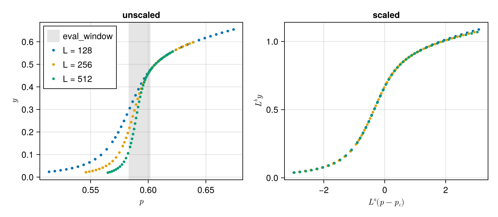

Usage guide
This guide collapses the order parameter of two-dimensional site percolation, estimates the critical exponents with error bars, and tests one of them against its exact value. The data are the example of autoScale: the relative size $y$ of the largest cluster, with its error, at occupation probability $p$, for system sizes $L = 128, 256, 512$.
using Autoscalers
using CairoMakie
using DelimitedFiles
using Random
dir = joinpath(pkgdir(Autoscalers), "test", "data", "autoscale")
read_size(L) = readdlm(joinpath(dir, "orderParam_L$L.dat"); comments=true)
data = [
(; L, p, y, y_err) for L in (128, 256, 512) for (p, y, y_err) in eachrow(read_size(L))
]
first(data, 3)3-element Vector{@NamedTuple{L::Int64, p::Float64, y::Float64, y_err::Float64}}:
(L = 128, p = 0.514, y = 0.023437505, y_err = 6.8991e-5)
(L = 128, p = 0.519, y = 0.026381917, y_err = 8.0497e-5)
(L = 128, p = 0.524, y = 0.030066433, y_err = 9.5605e-5)Any Tables.jl table works, e.g. a vector of named tuples as here, or a DataFrame.
Fitting the collapse
Near the percolation threshold $p_c$, finite-size scaling predicts $y = L^{-β/ν} f(L^{1/ν} (p - p_c))$. With $a = 1/ν$ and $b = β/ν$, the data collapse onto $f$ when $L^b y$ is plotted against $L^a (p - p_c)$:
ansatz = @ansatz (a, b, p_c) -> :L^b * (:y ± :y_err) ~ :L^a * (:p - p_c)@ansatz((a, b, p_c)->:L ^ b * (:y ± :y_err) ~ :L ^ a * (:p - p_c))The scaling form holds close to $p_c$ in the unscaled $p$, so the points that are scored are chosen with eval_window in $p$. It is narrow enough that every size covers it after scaling; otherwise fit_collapse would warn.
scaler = Autoscaler(data, ansatz; eval_window=(0.583, 0.602))
fit = fit_collapse(scaler, [0.7, 0.1, 0.59])
fit.params3-element Vector{Float64}:
0.7494359072788891
0.10474307994821325
0.5926696656424555to_table gives the scaled data at the fitted parameters:
table = to_table(scaler, fit.params)
fig = Figure(; size=(800, 350))
unscaled = Axis(fig[1, 1]; xlabel=L"p", ylabel=L"y", title="unscaled")
scaled = Axis(fig[1, 2]; xlabel=L"L^a (p - p_c)", ylabel=L"L^b y", title="scaled")
vspan!(unscaled, 0.583, 0.602; color=(:gray, 0.2), label="eval_window")
for size in (128, 256, 512)
rows = filter(r -> r.L == size, data)
p, y, y_err = getindex.(rows, :p), getindex.(rows, :y), getindex.(rows, :y_err)
errorbars!(unscaled, p, y, y_err)
scatter!(unscaled, p, y; markersize=6, label="L = $size")
on_size = table.L .== size
errorbars!(scaled, table.x[on_size], table.y[on_size], table.y_err[on_size])
scatter!(scaled, table.x[on_size], table.y[on_size]; markersize=6)
end
axislegend(unscaled; position=:lt)
fig
Error bars
bootstrap refits the collapse to synthetic data drawn from the fitted master curve with the measured errors. Here n is small to keep the documentation fast; use at least 1000 replicates in practice.
boot = bootstrap(scaler, fit.params; n=200, rng=Xoshiro(1))
confint(boot)(a = (0.7420773265835487, 0.7560098644017199), b = (0.10324529942444077, 0.1071137353897775), p_c = (0.5925780662486055, 0.5927395506776368))stderror(boot)(a = 0.003484665338465836, b = 0.0009901500941617808, p_c = 4.589912782455054e-5)confint gives bias-corrected 95 % intervals, which can be asymmetric around the estimate, while stderror gives the standard deviation of the bootstrap samples.
Testing an exponent
For two-dimensional percolation $ν = 4/3$ exactly, so $a = 3/4$. The p-value of that hypothesis is
pvalue(boot, :a => 3 / 4)0.6557653194714023so the collapse is consistent with it. With method=:null, pvalue refits the collapse under the hypothesis instead. That is slower, but it can test several parameters at once, here both exact exponents, $a = 3/4$ and $b = β/ν = 5/48$:
pvalue(boot, :a => 3 / 4, :b => 5 / 48; method=:null, rng=Xoshiro(2))0.1691542288557214The data are consistent with both.
This page was generated using Literate.jl.